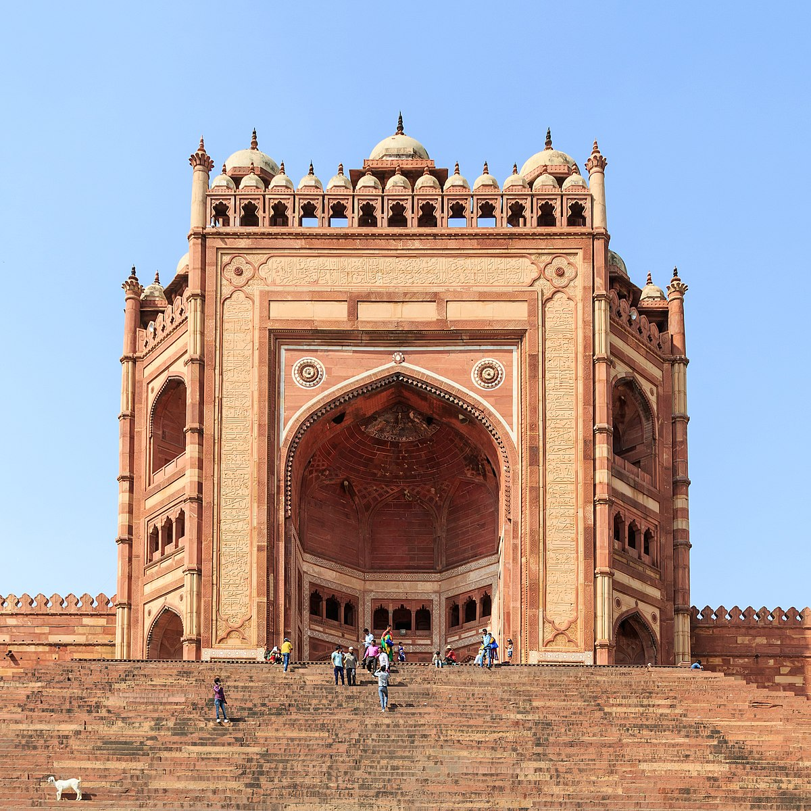
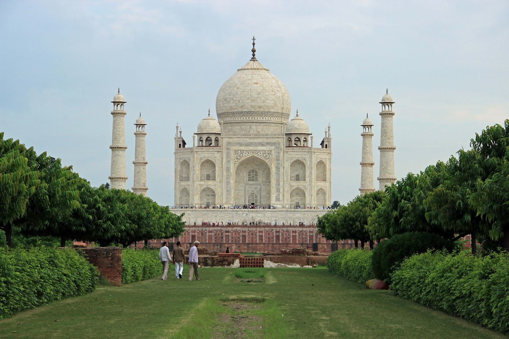
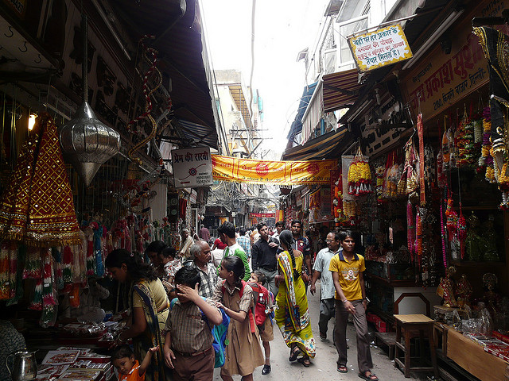
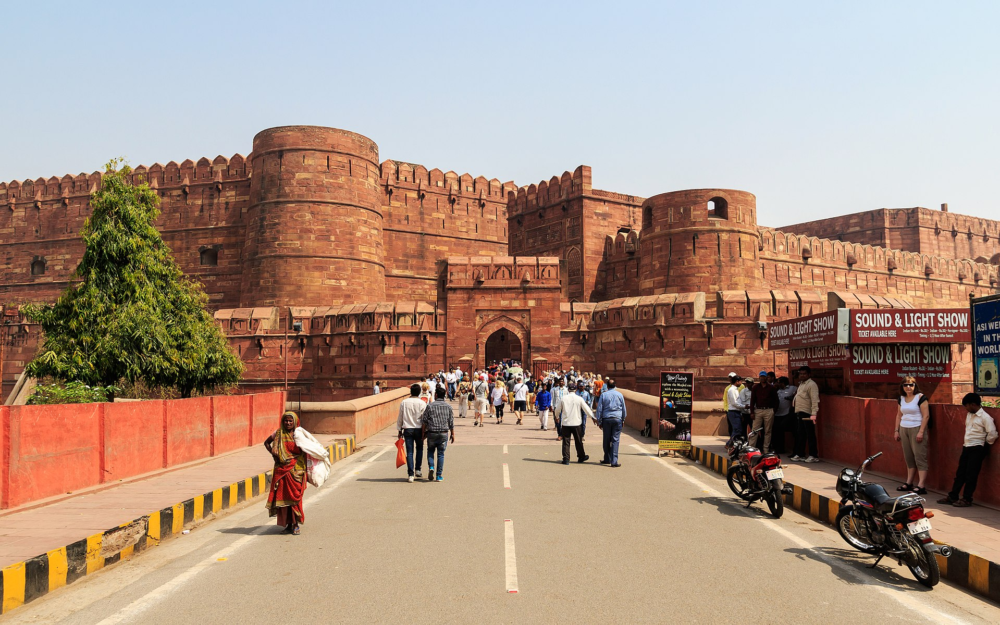

Welcome to city on the banks of river Yamuna - Agra
Introduction
One of India’s most popular tourist destinations,
Agra holds an important place in history as it is home to
many architectural wonders from the Mughal era.
Each famous site has a story of its own that both tour guides and locals love to talk about.
To truly experience Agra like a local as well as a tourist,
we have put together a guide to eight famous places everyone
should consider having on their travel itineraries.
How to reach?
Agra Cantonment (station code: AGC) is the main railway station in the Indian city of Agra.
It is located near the Sadar Bazaar towards the southwest of the city.
It lies on the main Delhi-Chennai and one of the Delhi-Mumbai lines.
Agra Cantt railway station has 6 platforms:
- Platform 1 = 540 meters
- Platform 2 = 598
- Platform 3 = 573
- Platform 4 = 735
- Platform 5 = 631
- Platform 6 = 320
- Platform 7 = Proposed on 24 Jan 2018
Agra Cantt. railway station has tourist information counter,
computerized reservation counters, (Indrail Passes are available),
waiting room, retiring room, vegetarian and non-vegetarian refreshment rooms,
water coolers, water wending machines and book stall.
Taxis, auto-rickshaws, tempos and cycle-rickshaws are available for local movement.
Idgah Bus Stand is nearby. Distance from Agra Cantt. railway station:
Taj Mahal 5.7 km, Agra Fort 5.2 km, Sikandra 9.7 km, Fatehpur Sikri 38 km, Agra airport 3.6 km.
Top 5 places to visit
Taj Mahal
People from all around the world may not have heard of Agra,
but everyone knows the beautiful ivory white-marble mausoleum, Taj Mahal, as the icon of love.
This wonder of the world is the perfect example of the intricacy and brilliance of Persian and Mughal
architecture.
It was constructed by Emperor Shah Jahan, in memory of his beloved wife, Mumtaz Mahal.
Today, the Taj Mahal is a UNESCO World Heritage Site and it continues to hold the same magical appeal,
attracting approximately eight million tourists a year.
Viewing of the Taj Mahal is usually from sunrise to sunset, except Fridays.

Fatehpur Sikri
Fatehpur Sikri is a town in the Agra District of Uttar Pradesh, India.
The city itself was founded as the capital of Mughal Empire in 1571 by Emperor Akbar,
serving this role from 1571 to 1585,
when Akbar abandoned it due to a campaign in Punjab and was later completely abandoned in 1610.

Mehtab Bagh
Constructed just opposite the Taj Mahal, Mehtab bagh is a char-bagh (four garden)
complex that is considered the ultimate viewing point of the magnificent marble mausoleum.
The garden is open from sunrise to sunset and is considered a photographer’s
haven because it is the point from where you can take some unique photographs of
the Taj with a gorgeous backdrop.

Kinari Bazar
Located on the Agra-Fatehpur Sikri highway,
Korai village is home to people belonging to the Kalandhar tribe.
A day trip to experience the kind of life they live will not only show you what rural life in
India is like but will also give an inside feel of their simple lifestyle—their huts,
how they cook their food, and how they drink water using a hand pump.
The people of this village now earn a livelihood through these day tours,
as the money collected is used to purchase everyday items such as food, rations,
and stationary for the kids. These items are then equally distributed among the families.

Agra fort
Agra has one of the finest Mughal forts in India.
This red sandstone and marble architecture exudes power and grandiosity.
Agra fort was primarily begun by Emperor Akber in 1565 as a military structure and
was later transformed into a palace by his grandson Emperor Shah Jahan.
Some of the most iconic structures in Mughal history are still a part of this fort,
such as Shish Mahal (Mirror Palace),
Diwan-e-aam (Hall of general audience) and Diwan-e-khaas (Hall of private audiences).
The Amar Singh gate, which was originally built to confuse attackers with its dogleg design,
is now the sole point of entry to the fort.

Best hotels to spend time
- Hotel Taj Resorts
- Hotel Taj Vilas
- Hotel Oberoi Amarvilas
- Siris hotel
- Radisson Blu Hotel
Below is the map to trace yourself